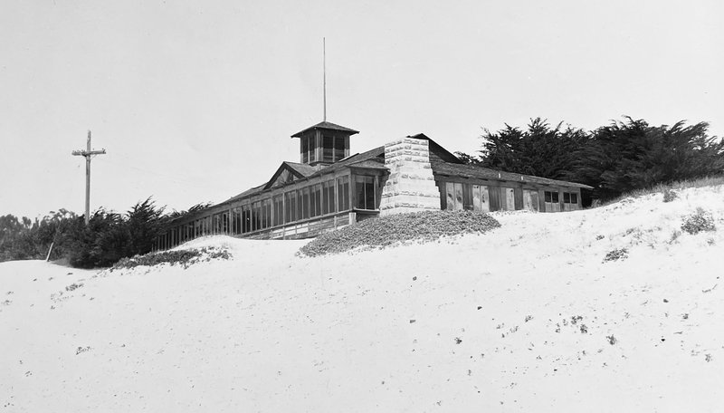
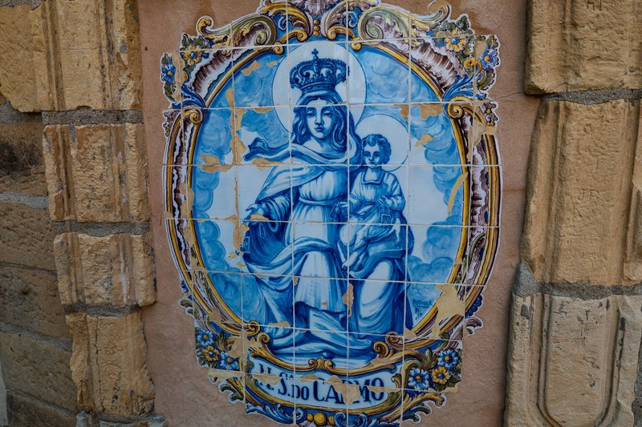
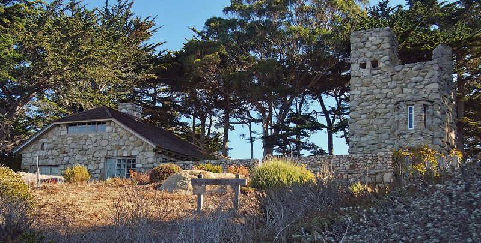
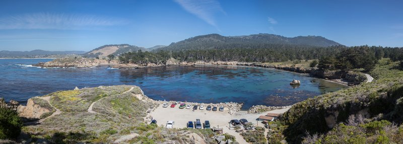

Carmel-by-the-Sea occupies one square mile on the Monterey Peninsula and has maintained a population of fewer than 4,000 residents since its incorporation in 1916. The town has no street numbers, no parking meters, no traffic signals, and until recently had an ordinance prohibiting women from wearing high heels without a permit — a law that was selectively enforced as a quirk rather than a genuine restriction. These rules are not performative eccentricities; they reflect a consistent civic decision to resist the infrastructure that typically accompanies growth.
The Monterey cypress trees that define Carmel's coastline grow naturally in only two places on earth: Point Lobos and the Del Monte Forest on the Pebble Beach headlands. Both sites are within three miles of the hotel. The trees' twisted silhouettes are a product of chronic wind exposure and salt air — they grow fastest on the windward side facing the Pacific, which produces their characteristically asymmetric canopy. Point Lobos, three miles south, contains the largest remaining stand of Monterey cypress not planted by humans.
Carmel developed in the early 20th century as an artists' colony, drawing writers, painters, and photographers to its relatively affordable rents and dramatic light. Robinson Jeffers, Jack London, Sinclair Lewis, and Upton Sinclair all spent time here. The cottage architecture — low-roofed stone and wood-frame buildings set back from the street with uneven stone paths — was deliberate: residents wanted the village to read as settled and permanent rather than as a resort town. The result is a place that looks much as it did in the 1930s, which is either its main appeal or its main limitation depending on the visitor.